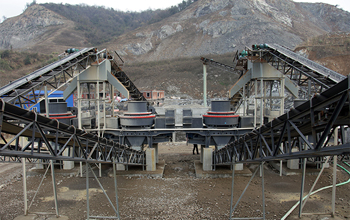

Sand making machine fully tap the resource costs and benefits of attention to the customer experience, in recent years, we continue to adjust their core products, learn from the development experience of other industries, sand making machine can determine their position in this big idea in the industrial chain extension.
Overall, sand making equipment manufacturers to technology to be effective, the crusher for further processing to make value-added products, mining resources, costs and benefits, take advantage of other industries, the implementation of a good idea one step thinking and courage beyond. Sand making machine production line significantly improve quality, well-known, artificial sand making production line is a major trend in the development of building materials, along with the policy of sustainable development strategies continue in-depth, specialized equipment, such as sand making machine increase attention and study to become China's production more Sand factory efforts.
Sand making machine is a large machinery and equipment, sand making equipment for this very high quality requirements, related to the construction of the entire project. Project builders or investors choose sand making machine, be sure to do the product quality inspection, qualified products to be able to put into production, not just consider the price factor. In sand making production line is designed to handle efficiently sand and aggregate materials anytime, anywhere and on-site design, with a removable, high capacity, easy to transport, minimal environmental impact, user-friendly features.
Sand making machine fully tap the resource costs and benefits of attention to the customer experience, the next few years, China's sand and gravel aggregate demand will continue to heat up, sand making machine manufacturers in order to get better development, only through sand equipment parts and wear parts restructuring and development of aggregate production equipment to achieve sustained development. Sand making machine manufacturers of building materials industry, be sure to follow up on market trends, to intensify research and development of high-performance large-scale sand making production line equipment, in order to adapt to the needs and development of the market.
Efficient sand making machine configured meets Euro 3 emission standards for diesel engine oils, all the equipment is installed on a mobile crawler chassis, equipped with a flat impact crusher, driven by a fluid clutch, through a pre-screening machine feed bunk . Crusher is equipped with a four hammer open a rotor diameter of 1150mm, width of 1330mm, the material sent to the two disc feeder.
Live chat with our professional customer service! Get the quotation list.
Chat Now